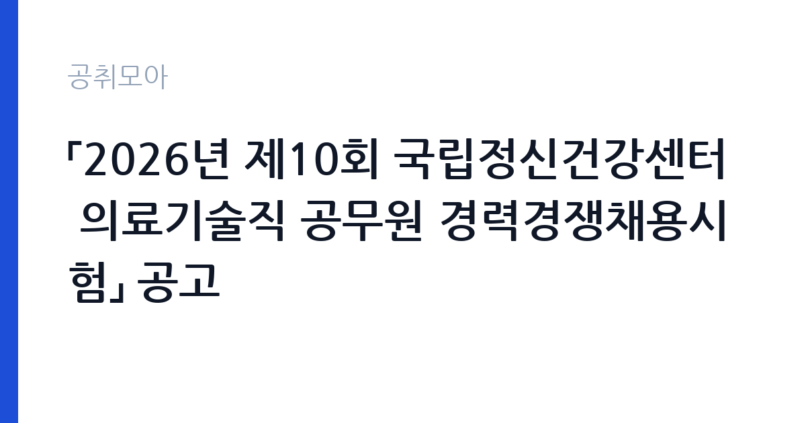

[국가기관] 「2026년 제10회 국립정신건강센터 의료기술직 공무원 경력경쟁채용시험」 공고
보건복지부 국립정신건강센터 · 서울 · 마감 2026-11-12 (D-10) · 출처 나라일터

한눈에 보는 모집 조건
| 기관 | 보건복지부 국립정신건강센터 |
|---|---|
| 공고명 | 「2026년 제10회 국립정신건강센터 의료기술직 공무원 경력경쟁채용시험」 공고 |
| 고용형태 | 정규직 |
| 근무지 | 서울 |
| 게시일 | 2026-11-02 |
| 마감일 | 2026-11-12 (D-10) |
지원자격, 이렇게 읽으세요
- 의료기술서기 일반임기제 1명
- 접수 ~2026-11-12 마감
- 세부 조건은 원문 공고문 확인
정규직 채용은 기간의 정함이 없는 근로계약을 전제로 합니다. 수습 기간을 두고 평가한 뒤 정규직으로 확정하는 절차가 일반적이며 기관의 인사 규정과 임금 체계를 적용받습니다. 이번 공고는 보건복지부 국립정신건강센터에서 직접 진행하는 자체 전형으로, 응시자격과 제출서류는 공고문에 항목별로 제시됩니다. 의료기술서기 일반임기제는 해당 분야의 면허·자격 또는 경력을 요건으로 합니다. 공고문에 직무 분야와 요건이 함께 제시되므로, 본인 자격이 어느 항목에 해당하는지 먼저 확인해야 합니다. 임기제공무원은 임용 기간이 정해져 있고, 임용일부터 근무가 가능해야 합니다. 국가공무원 임용 결격사유가 적용되고, 의료 정보를 다루는 직무 특성상 신원조회와 보안 서약 절차가 따릅니다. 채용기간과 처우는 공고문에 명시되어 있으므로 원문을 기준으로 준비하십시오. 서류는 접수 마감 이후 보완이 되지 않으므로 자격 요건과 증빙 서류를 마감 전에 모두 갖춰야 합니다. 공고문에 명시된 우대 사항은 해당 여부를 확인해 증빙을 첨부해야 가점이 반영됩니다. 경력 요건은 총 경력이 아니라 해당 직무 경력만 인정하는 경우가 있으니, 증명서의 직무 기술을 함께 확인하십시오.
이 공고의 포인트
이 공고의 첫 번째 포인트는 고용 형태입니다. 수습 기간 평가를 통과하면 기간의 정함이 없는 신분이 되어 고용이 안정됩니다. 두 번째는 업무 범위가 명확하다는 점입니다. 의료기술직(일반임기제) 직무로 채용되므로 배치 이후 담당 업무가 크게 흔들리지 않습니다. 세 번째는 근무지입니다. 서울 지역 근무로 접근성은 좋지만 그만큼 지원자가 몰리는 지역이므로 경쟁률을 넉넉히 잡아야 합니다. 공고가 올라온 지 얼마 되지 않아 아직 지원자 수가 많지 않을 가능성이 있습니다. 같은 직무로 함께 올라온 공고 11건 가운데 마감이 중간에 위치하므로 다른 공고와 일정이 겹치는지 확인하십시오. 다만 선발 인원이 1명으로 많지 않아 자격을 갖춘 지원자가 몰리면 경쟁률이 높아질 수 있습니다.
전형은 어떻게 진행되나
서류전형과 면접전형 외에 직무수행능력 평가가 붙는 경우가 있습니다. 평가 방식은 공고문에 구체적으로 적혀 있으므로 어떤 항목에 배점이 높은지 먼저 파악하십시오. 면접에서는 지원 동기보다 실제 업무 경험에 대한 질문이 많고, 답변의 구체성이 평가를 가릅니다. 전형 일정은 서류 마감 이후 빠르게 진행되므로 연락 가능한 번호를 정확히 기재하고 문자와 메일을 수시로 확인해야 합니다. 최종 단계에서는 결격사유 조회와 신체검사가 진행됩니다. 제출서류 원본은 최종 단계에서 다시 요구되는 경우가 있어 사본과 함께 보관하십시오.
원문에서 확인한 전형 방식
[국립정신건강센터 공고 제2026-104호] 2026년 제10회 국립정신건강센터 의료기술직 공무원 경력경쟁채용시험 공고 국립정신건강센터에서는 의료기술직 공무원 경력경쟁채용시험을 붙임과 같이 공고하오니 많은 응시 바랍니다. ○ 채용직렬(선발인원): 의료기술서기 일반임기제 총1명 ○ 채용기간: 공고문 참조 ○ 원서접수 기간: 2026.11.10.(화) ~ 11.12.(목) ○ 선발방법: 서류전형 → 면접시험 ○ 근무예정지: 국립정신건강센터(서울 광진구) ○ 더 자세한 사항은 첨부파일(공고문)을 참고하시기 바랍니다. ○ 담당부서(연락처): 인사팀(02-2204-0041)
이런 분께 추천해요
- 의료기술직 해당 분야 자격·경력을 갖춘 분
- 검사·기록 관리에 정확성을 가진 분
- 의료정보 보호 규정을 엄격히 지킬 수 있는 분
지원 전 체크리스트
- 응시자격 요건과 경력 기준을 충족하는가 — 경력은 증명서로 입증해야 합니다
- 수습 기간과 정규직 전환 조건을 확인했는가
- 제출서류 목록을 모두 준비했는가 — 누락 시 서류 단계에서 탈락합니다
- 접수 마감 2026-11-12 이전에 접수 방식을 확인해 제출했는가
모집 일정과 제출 타이밍
2026-11-02에 공고가 올라왔고 접수는 2026-11-12까지입니다. 남은 기간은 10일이며, 이 기간에 자격증 사본과 경력증명서, 주민등록등본 같은 기본 서류를 모두 준비해야 합니다. 경력증명서는 발급에 며칠이 걸리는 경우가 있으니 가장 먼저 신청하십시오. 접수는 온라인과 우편·방문으로 나뉘는 경우가 많고, 우편 접수는 도착 기준으로 판정되므로 마감일 소인만 믿으면 안 됩니다. 면접 일정은 서류 발표 후 개별 통보되므로 제출 후에도 연락을 받을 수 있도록 유지해야 합니다. 임용 예정일이 빠르게 잡히는 공고이므로 현재 일정과 겹치지 않는지 미리 확인하십시오. 서울 근무지는 대중교통 접근성이 좋은 대신 주차와 통근 시간이 변수입니다. 출퇴근 경로를 미리 확인하십시오. 마감까지 2주 안팎이 있어 준비할 시간은 있지만 미루면 촉박해집니다. 선발 인원이 한두 명 수준이라 지원자 개개인의 서류 완성도가 그대로 평가에 반영됩니다.
직무 이해하기: 국가기관
국립정신건강센터는 보건복지부 소속 국립정신병원으로, 정신건강 정책 연구와 진료를 함께 수행합니다. 이번 채용은 의료기술서기 일반임기제 1명으로, 의료기술직군 가운데 해당 분야의 검사·치료 지원 업무를 맡습니다. 담당 업무는 배치 부서에 따라 임상심리 검사, 재활 프로그램 운영, 의료 장비 운용 등으로 나뉘고, 진료과와 협력해 검사 일정을 조율합니다. 검사 결과와 기록을 관리하고 개인정보·의료정보 보호 규정을 지켜야 합니다. 근무예정지는 서울 광진구 센터 본원입니다. 직무 교육은 입사 후 기관 자체 계획에 따라 진행되므로 사전 경험이 없어도 시작할 수 있습니다.
자기소개서 작성 팁
지원서는 해당 분야 자격과 실무 경험을 앞세우는 것이 핵심입니다. 실습이나 근무 중 수행한 검사 종류와 건수, 사용한 도구, 오류를 발견해 바로잡은 경험을 구체적으로 쓰십시오. 정신건강 영역에 대한 이해를 지원 동기와 연결하면 설득력이 높아집니다. 임기 기간이 정해져 있으므로 그 기간에 무엇을 해낼 수 있는지 목표로 마무리하십시오. 구성은 지원 동기, 직무 경험, 기여 방안 순서가 무난합니다. 지원 동기는 보건복지부 국립정신건강센터의 사업 중 본인이 관심을 가진 부분을 한 가지로 좁혀 서술하고 추상적인 표현은 줄이십시오. 직무 경험은 담당했던 업무와 규모, 결과를 수치로 제시하면 설득력이 올라갑니다. 기여 방안은 입사 후 첫 3개월과 1년 계획으로 나눠 쓰면 준비도가 드러납니다.
면접 준비 포인트
면접에서는 검사·치료 지원 실무와 기록 관리의 정확성을 확인합니다. 검사 결과가 예상과 다르게 나왔을 때 어떻게 재확인하는지, 장비가 오작동하면 어떤 순서로 조치하는지 묻습니다. 정신건강 영역은 환자 응대와 비밀 유지가 특히 중요하므로 개인정보 보호 태도를 반드시 언급하십시오. 교대나 당직 가능 여부도 확인 질문으로 나옵니다. 답변은 상황, 판단, 조치의 순서로 정리하면 전달이 분명해집니다. 모르는 질문에는 모른다고 밝히고 확인 방법을 제시하는 편이 억지 답변보다 낫습니다. 마지막에는 근무 의사와 함께 2026-11-12 이후 일정에 언제든 응할 수 있다는 점을 전달하십시오. 면접 당일 신분증과 제출서류 원본을 요구하는 경우가 있으니 공고문의 준비물 목록을 확인하십시오.
급여·근무조건 읽는 법
일반임기제공무원은 국가공무원 보수규정상 연봉등급제를 적용받아 일반 직급 공무원과 산정 방식이 다릅니다. 연봉은 직무등급별 범위에서 경력과 직무 난이도를 반영해 정해지고, 여기에 직급보조비·정액급식비 같은 수당이 더해집니다. 채용기간이 정해져 있으므로 연봉 총액과 계약 기간을 함께 계산해 비교해야 합니다. 구체적인 연봉 등급과 금액은 공고문 처우 항목에서 확인하십시오. 2026년 적용 최저임금은 시급 10,320원, 월 환산 2,156,880원(주 40시간·209시간 기준)입니다. 고용노동부 고시 제2025-47호로 확정된 금액입니다. 공고문에 금액이 제시되지 않은 항목은 원문 보수표나 처우 설명에서 확인해야 하며 확인되지 않은 수치는 쓰지 않는 것이 원칙입니다. 비교할 때는 월 급여뿐 아니라 상여·명절휴가비·복지포인트·초과근무수당까지 포함한 연간 총액으로 계산하십시오. 기간제라면 계약 기간 동안의 총액을, 무기계약이라면 호봉 상승과 정년까지의 누적 소득을 기준으로 판단하는 편이 정확합니다.
자주 묻는 질문
- 선발 인원은 몇 명인가요?
공고문 기준 1명입니다. 직종별로 인원이 나뉘는 경우가 있으니 모집분야 항목을 함께 확인하십시오. - 근무지는 어디인가요?
서울 지역의 보건복지부 국립정신건강센터 소속 근무지입니다. 세부 주소와 출퇴근 조건은 원문 공고문에서 확인할 수 있습니다. - 보수는 얼마인가요?
채용 신분(정규직)과 기관 임금 규정에 따라 정해지며 구체적인 금액은 공고문 처우 항목에 제시됩니다. 금액이 공개되지 않은 경우에는 원문의 보수표를 확인하십시오.
함께 보면 좋은 공고
[국가기관] 민주평화통일자문회의 경기지역회의 기간제근로자 채용 공고 — 마감 2026-11-13[국가기관] 2026년도 제6회 경주우체국 상시계약집배원 채용 공고 — 마감 2026-11-09[국가기관] 2026년도 제15회 포항우체국 상시계약집배원 채용시험 공고 — 마감 2026-11-10출처: 나라일터 공개정보를 바탕으로 공취모아가 정리한 안내글입니다. 모집 조건·일정은 변경될 수 있으니 지원 전 반드시 원문 공고문을 확인하세요. 본 글은 정보 제공용이며 합격을 보장하지 않습니다.